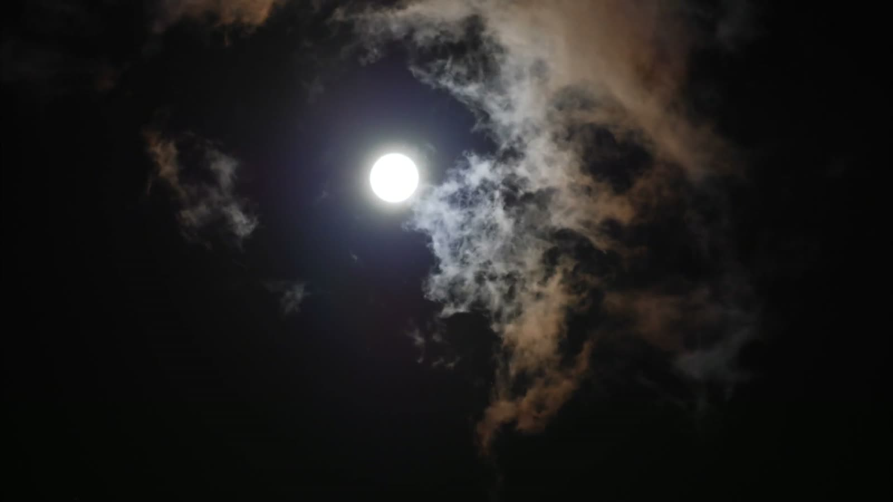

BROADCASTING FROM SOMEWHERE PAST THE MOON
The porch
light’s on.
Country stories. Strange skies.
A little company after dark.
NOW PLAYING HOLLER MOON
Listen on Spotify Apple Music & moreSweet Tea Satellite is a cosmic-country AI music project.

PICK UP THE SIGNAL
Heard a song in your feed?
Find it here. Settle in for the whole story.
01Brown Mountain LightsA signal from the hills.Listen ↗
02Porch Light Goes OutA light to come home to.Apple Music ↗
03Hayride to NowhereOne more turn after dark.Apple Music ↗
04Scarecrow WaltzA ghost story you can dance to.Apple Music ↗
05Dead Man’s Honky-TonkThe night keeps going.Apple Music ↗
06Sweet Tea at SunriseEvery long night needs a warm ending.Apple Music ↗
Prefer another player? Choose your music service ↗